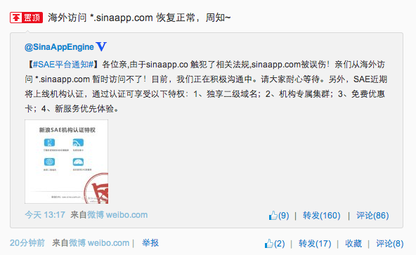
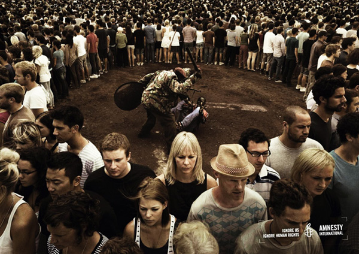

打败互联网审查，打败GFW
GFW(中国国家防火长城)在5月底封锁了Google(谷歌)的所有服务。 我们制作了镜像网站，并号召中国网民挑战GFW。
Google镜像迅速在微博和微信上走红，包括大V在内的许多用户都进行了截图转发。#没有抗争就没有自由 成了最热门标签之一。新浪微博迅速开始删除这些微博，但是截图微博的用户太多，审查系统不能有效识别截图。我们的镜像网站在1天内就达到了10万多人访问。
大部分用户都不知道GFW屏蔽了Google，许多以为是自己电脑或者Google服务器的问题。但在推出Google镜像网站后，上百万的用户都意识到了这是GFW(中国国家防火长城)有史以来最卑鄙的互联网审查。 GFW不仅对Google进行封锁，还故意伪装成用户电脑的问题，实在无底线。（当然GFW还封锁了华尔街日报，推特等)
GFW虽然疯狂地尝试了多种方式，但到目前为止还是没有能力封锁我们的镜像网站。首先我们使用亚马逊云和微软云等技术。封锁镜像网站需要封锁整个亚马逊和微软服务，将会给中国的外企和本地企业带来严重的经济灾难。 再次，我们使用了sinaapp.co域名。这个域名看起来普通，但和新浪云计算的域名sinaapp.com类似。在网民大量转发镜像网站后，GFW对sinaapp.co进行了关键字封锁，导致sinaapp.com也被封锁，新浪云计算无法在海外被访问，见新浪官方的置顶公告。GFW受到压力在几小时内被迫对sinaapp.co进行了解封。 GFW无法屏蔽我们的镜像，并不意味者审查机构无事可做了。新浪微博将镜像网址都加入了黑名单，无法被分享。但是众多网友用手机截屏等方法来分享，导致审查者无计可施 我们敬佩中国网民的勇气与智慧。没有抗争就没有自由。 请大家相信自己，如果每个阅读本文的人都转发，每天都会有上百万个抗议Google被封锁的微博和微信。不抗议就是纵容。只要你参与，我们一定能争取到互联网自由！
附录：如果你坚持阅读到结尾，那你一定是言论自由的坚定支持者了。分享个小秘密给你。你还记得今年1月21日全国断网么？ 国家互联网应急中心发表报告说此是网络攻击造成的，并暗示是境外势力。实际上，断网确实是因为网络攻击。来源不是境外势力，而是GFW的友方伤害。
在2013年底，我们建立了自由微博(收录被新浪删除的微博)等网站的镜像。镜像的后台服务器地址每分钟会自动更改，防止GFW封锁。在全国断网前几日，GFW的技术人员写了程序，自动检测镜像网站后台网址，加入GFW的域名黑名单。估计是GFW黑名单条目有限，或者是GFW技术人员水平有限，导致GFW系统过载，把所有域名都给封锁了，造成了全国断网。在21日之后，GFW对镜像域名的封锁都取消了。更多技术细节请阅读《谁切断了中国网络？头两号嫌疑人专访》。
对断网事件，新华社(链接是新京报的，但文章是据新华社电)引用专家评论“世界的咽喉都在外国人手中”和”当务之急是，针对目前根服务器掌控权握在他国手里的无奈...以更好地确保我国网络安全”。新华社成功挽救了GFW这个猪一样的队友，利用网友的爱国心，将GFW的重大失误转变为境外势力的攻击。但是现在，你知道了全国断网的真相。